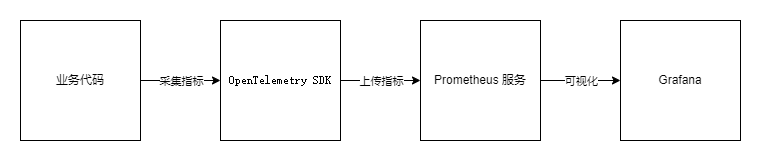
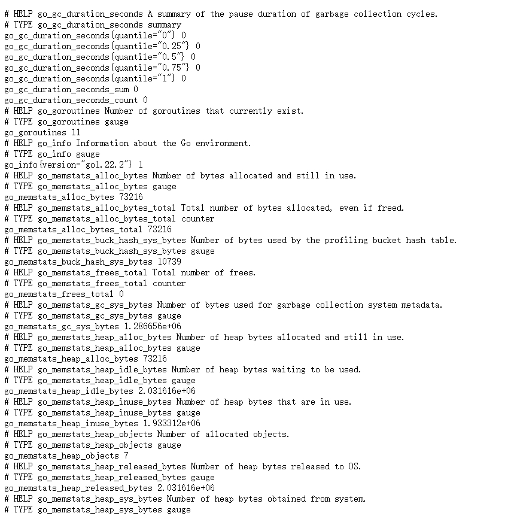
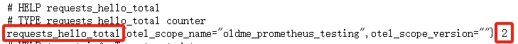
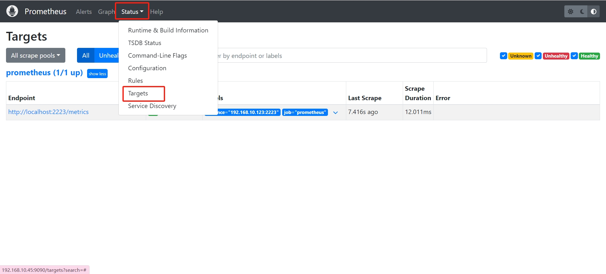
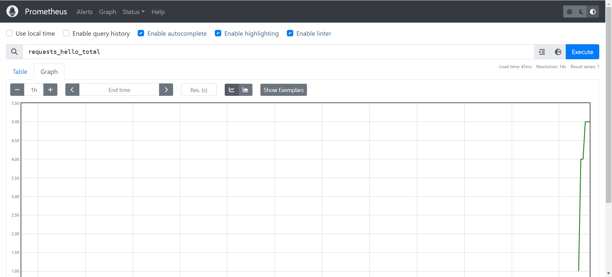
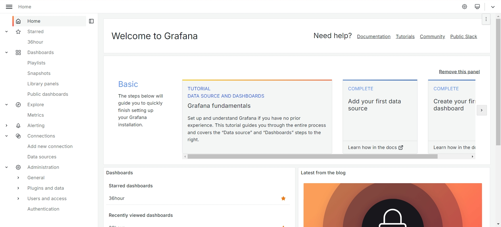
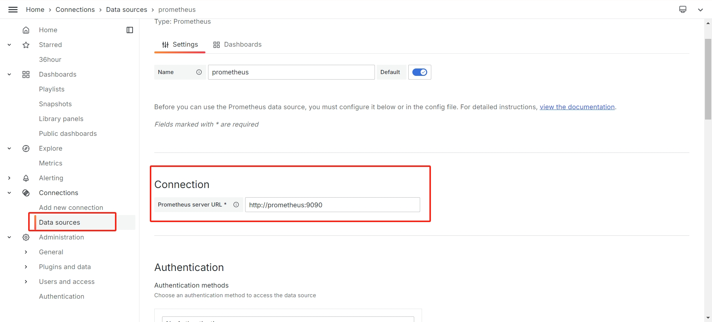
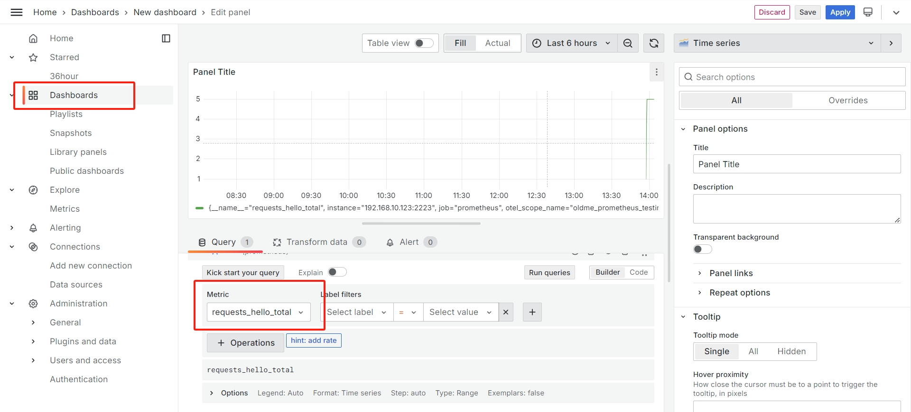

探索 Go 语言中 Opentelemetry 与 Prometheus 集成，导出 HTTP 服务指标监控，并最终将 Prometheus 指标可视化到 Grafana 中。
前言
Opentelemetry
分布式链路跟踪（ Distributed Tracing ）的概念最早是由 Google 提出来的，发展至今技术已经比较成熟，也是有一些协议标准可以参考。目前在 Tracing 技术这块比较有影响力的是两大开源技术框架：Netflix 公司开源的 OpenTracing 和 Google 开源的 OpenCensus。两大框架都拥有比较高的开发者群体。为形成统一的技术标准，两大框架最终磨合成立了 OpenTelemetry 项目，简称 otel。
Prometheus
Prometheus 源自 SoundCloud，拥有一整套开源系统监控和警报工具包，是支持 OpenTelemetry 的系统之一，是 CNCF
的第二个项目
Grafana
Grafana 是一个开源的分析和可视化平台，它允许你查询、可视化和警报来自各种数据源的数据。它提供了一个用户友好的界面，用于创建和共享仪表板、图表和警报。Grafana 支持广泛的数据源，其中就包括 Prometheus

基础概念
这里为了简单入门，尽量简单的介绍一些抽象概念，结合着代码理解，如果不能理解也没关系，代码写着写着自然就明白了：
Meter Provider
用于接口化管理全局的 Meter 创建，相当于全局的监控指标管理工厂。
Meter
用于接口化创建并管理全局的 Instrument，不同的 Meter 可以看做是不同的程序组件。
Instrument
用于管理不同组件下的各个不同类型的指标，例如 http.server.request.total
Measurements
对应指标上报的具体的 DataPoint 指标数据，是一系列的数值项。
Metric Reader
用于实现对指标的数据流读取，内部定义了具体操作指标的数据结构。OpenTelemetry 官方社区提供了多种灵活的 Reader 实现，例如 PeridRader、ManualReader 等。
Metric Exporter
Exporter 用于暴露本地指标到对应的第三方厂商，例如：Promtheus、Zipkin 等。
指标类型
OpenTelemetry metrics 有许多不同指标类型，可以把它想象成类似于 int, float 这种的变量类型：
**Counter：**只增不减的指标，比如 http 请求总数，字节大小；
**Asynchronous Counter：**异步 Counter；
**UpDownCounter：**可增可减的指标，比如 http 活动连接数；
**Asynchronous UpDownCounter：**异步 Counter；
**Gauge：**可增可减的指标，瞬时计量的值，比如 CPU 使用，它是异步的；
Histogram：分组聚合指标，这个较为难以理解一些，可以移步此处 查看，当然，后文也会有一个详细的例子来使用它。
实战：采集指标
废话了一堆，终于可以实战了。我们先以 http 请求总数为例来走一遍整个采集指标流程。安装扩展：
go get github.com/prometheus/client_golang
go get go.opentelemetry.io/otel/exporters/prometheus
go get go.opentelemetry.io/otel/metric
go get go.opentelemetry.io/otel/sdk/metric
打开 main.go，编写以下代码：
package main
import (
"context"
"fmt"
"log"
"net/http"
"os"
"os/signal"
"github.com/prometheus/client_golang/prometheus/promhttp"
"go.opentelemetry.io/otel/exporters/prometheus"
api "go.opentelemetry.io/otel/metric"
"go.opentelemetry.io/otel/sdk/metric"
)
const meterName = "oldme_prometheus_testing"
var (
requestHelloCounter api.Int64Counter
)
func main() {
ctx := context.Background()
// 创建 prometheus 导出器
exporter, err := prometheus.New()
if err != nil {
log.Fatal(err)
}
// 创建 meter
provider := metric.NewMeterProvider(metric.WithReader(exporter))
meter := provider.Meter(meterName)
// 创建 counter 指标类型
requestHelloCounter, err = meter.Int64Counter("requests_hello_total")
if err != nil {
log.Fatal(err)
}
go serveMetrics()
ctx, _ = signal.NotifyContext(ctx, os.Interrupt)
<-ctx.Done()
}
func serveMetrics() {
log.Printf("serving metrics at localhost:2223/metrics")
http.Handle("/metrics", promhttp.Handler())
http.Handle("/index", http.HandlerFunc(func(w http.ResponseWriter, r *http.Request) {
// 记录 counter 指标
requestHelloCounter.Add(r.Context(), 1)
_, _ = w.Write([]byte("Hello, Otel!"))
}))
err := http.ListenAndServe(":2223", nil) //nolint:gosec // Ignoring G114: Use of net/http serve function that has no support for setting timeouts.
if err != nil {
fmt.Printf("error serving http: %v", err)
return
}
}
在我们的代码中，我们定义一个名字为 requests_hello_total 的 Int64Counter 指标类型，Int64Counter 代表这是一个只增不减的 int64 数值，用作记录请求总数正好合适。运行我们的程序，如果不出错的话，访问 http://localhost:2223/index
可以看到 Hello, Otel!。并且我们访问 http://localhost:2223/metrics 可以看到指标数据：

这里数据还没有进行可视化，我们先把流程走通，多访问几次 http://localhost:2223/index 可以看到 requests_hello_total 会增加：

Histogram
接下来我们采集一下 Histogram 指标，统计在 0.1, 0.2, 0.5, 1, 2, 5 秒以内的 http 请求数，在 main.go 中加上相关代码，可以直接复制过去：
package main
import (
"context"
"fmt"
"log"
"math/rand"
"net/http"
"os"
"os/signal"
"time"
"github.com/prometheus/client_golang/prometheus/promhttp"
"go.opentelemetry.io/otel/exporters/prometheus"
api "go.opentelemetry.io/otel/metric"
"go.opentelemetry.io/otel/sdk/metric"
)
const meterName = "oldme_prometheus_testing"
var (
requestHelloCounter api.Int64Counter
requestDurationHistogram api.Float64Histogram
)
func main() {
ctx := context.Background()
// 创建 prometheus 导出器
exporter, err := prometheus.New()
if err != nil {
log.Fatal(err)
}
// 创建 meter
provider := metric.NewMeterProvider(metric.WithReader(exporter))
meter := provider.Meter(meterName)
// 创建 counter 指标类型
requestHelloCounter, err = meter.Int64Counter("requests_hello_total")
if err != nil {
log.Fatal(err)
}
// 创建 Histogram 指标类型
requestDurationHistogram, err = meter.Float64Histogram(
"request_hello_duration_seconds",
api.WithDescription("记录 Hello 请求的耗时统计"),
api.WithExplicitBucketBoundaries(0.1, 0.2, 0.5, 1, 2, 5),
)
if err != nil {
log.Fatal(err)
}
go serveMetrics()
go goroutineMock()
ctx, _ = signal.NotifyContext(ctx, os.Interrupt)
<-ctx.Done()
}
func serveMetrics() {
log.Printf("serving metrics at localhost:2223/metrics")
http.Handle("/metrics", promhttp.Handler())
http.Handle("/index", http.HandlerFunc(func(w http.ResponseWriter, r *http.Request) {
// 记录 counter 指标
requestHelloCounter.Add(r.Context(), 1)
// 计算请求处理时间
startTime := time.Now()
// 模拟请求处理时间
time.Sleep(time.Duration(rand.Intn(3)) * time.Second)
defer func() {
duration := time.Since(startTime).Seconds()
requestDurationHistogram.Record(r.Context(), duration)
}()
_, _ = w.Write([]byte("Hello, Otel!"))
}))
err := http.ListenAndServe(":2223", nil) //nolint:gosec // Ignoring G114: Use of net/http serve function that has no support for setting timeouts.
if err != nil {
fmt.Printf("error serving http: %v", err)
return
}
}
// 随机模拟若干个协程
func goroutineMock() {
for {
go func() {
// 等待若干秒
var s = time.Duration(rand.Intn(10))
time.Sleep(s * time.Second)
}()
time.Sleep(1 * time.Millisecond)
}
}
走到这里，代码层面结束了，已经成功一半了，代码开源在 Github
。之后我们就可以安装 Prometheus 服务端和 Grafana 来进行数据可视化。
安装 Prometheus
Prometheus 有多种安装方式，我这里依旧采用 Docker 安装，当然，你也可以使用其他方式安装，具体安装方式可以参考其他文章，后续 Grafana 同理，不在赘述，在 Prometheus.yml 中填写 targets 我们的地址：
scrape_configs:
- job_name: "prometheus"
static_configs:
- targets: ["localhost:2223"]
Prometheus 会自动去 {{target}}/metrics 中拉取我们的指标。之后在浏览器打开 Promethues 的地址，例如我的是：http://localhost:9090，如果全部正常的话可以在 status:targets 中看见我们的指标：

在 Promethues 的首页查询 requests_hello_total 指标可以看到可视化的图表：

安装 Grafana
我的 Grafana 安装好了，登录进去后是这样的（我更改过默认颜色）：

在 Data source 中添加 Prometheus 服务器，然后在 Dashboard 中添加我们想要监控的指标，即可看到更美观的图表：

